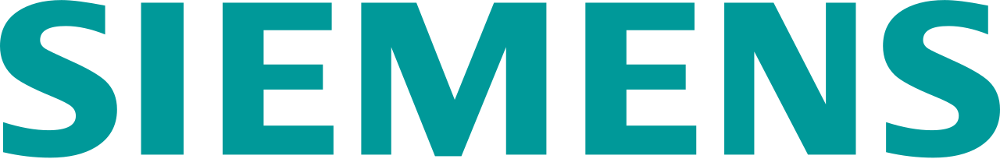
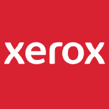

홈 > 브랜드 매거진 > SK하이닉스
SK하이닉스
SK하이닉스(SK Hynix)는 SK그룹 계열의 메모리 반도체 기업으로, 1983년 현대전자로 출발해 2012년 SK그룹에 인수되며 현 사명이 됐다.
산업 분야 기술·전자 · 공개 등급 자료 기반 · 브랜드 평가 4.7 ★
한눈에 보는 브랜드
SK하이닉스(SK Hynix)는 SK그룹 계열의 메모리 반도체 기업이다. 1983년 현대전자로 창립해 2001년 하이닉스반도체로 사명을 바꿨고, 2012년 SK그룹이 인수하며 SK하이닉스가 됐다.
브랜드 관점
SK하이닉스는 고대역폭 메모리 HBM을 앞세워 인공지능 시대의 메모리 수요를 주도하는 반도체 기업이다. D램·낸드의 사이클 산업에서 AI 특수 메모리로 무게중심을 옮긴 점이 돋보인다.
시작과 성장
1983년 현대전자산업으로 출발했다. 1999년 LG반도체를 인수하고 2001년 하이닉스반도체로 이름을 바꿨으며, 2012년 SK그룹에 인수되면서 사명을 SK하이닉스로 변경했다.
브랜드 아이덴티티
삼성전자·마이크론과 함께 세계 메모리 반도체 '빅3'로 꼽히는 DRAM·낸드 플래시 제조사로, 고대역폭 메모리(HBM) 등 첨단 메모리 분야에서 세계적 경쟁력을 갖췄다.
제품과 서비스
D램, 낸드플래시, 고대역폭 메모리(HBM), 기업용 SSD를 주력으로 한다. HBM3E를 양산하고 차세대 HBM4 개발을 이끄는 등 AI 메모리 분야에서 기술을 선도한다.
사람들
현재 상태
인공지능 서버용 HBM 수요가 폭발하면서 실적이 크게 개선됐고, 메모리 시장에서의 위상이 한층 강화됐다.
타임라인
정리된 연도형 이벤트가 없습니다.
BI/CI 변천사
확인된 BI/CI 이미지가 아직 없습니다.
함께 읽을 브랜드
 기술·전자 · 자료 기반삼성전자
기술·전자 · 자료 기반삼성전자삼성전자(Samsung Electronics)는 한국을 대표하는 전자·반도체 기업으로, 인터브랜드 2025 베스트 코리아 브랜드 1위(브랜드 가치 약 122.2조 원...
 기술·전자 · 자료 기반삼성SDI
기술·전자 · 자료 기반삼성SDI삼성SDI(Samsung SDI)는 삼성그룹 계열의 2차전지·전자재료 기업으로, 1970년 삼성-NEC로 출발해 1999년 현 사명이 됐다.
 기술·전자 · 편집 검수올림푸스
기술·전자 · 편집 검수올림푸스올림푸스(Olympus)는 1919년 일본에서 광학기기 제조사로 출발해 현재 내시경 등 의료기기를 핵심으로 하는 정밀기술 기업이다.

기술·전자 · 자료 기반지멘스지멘스(Siemens)는 1847년 베를린에서 창립해 산업자동화·전기·철도·의료기술을 아우르는 독일의 다국적 산업·전기 기업이다.

기술·전자 · 편집 검수제록스제록스(Xerox)는 1906년 미국에서 창립해 제로그래피 기반 복사기로 사무 문서 산업을 개척한 문서장비 기업이다.
 기술·전자 · 자료 기반LG유플러스
기술·전자 · 자료 기반LG유플러스LG유플러스(LG Uplus)는 LG그룹 계열의 통신 기업으로, 1996년 LG텔레콤으로 출발해 2010년 데이콤·파워콤 합병 후 현 사명이 됐다.
 기술·전자 · 자료 기반더존비즈온
기술·전자 · 자료 기반더존비즈온더존비즈온(Douzone Bizon)은 ERP·회계 소프트웨어와 클라우드 플랫폼을 제공하는 한국의 대표 기업용 SW 기업이다.
인텔은 보이지 않는 부품을 소비자가 인식하는 브랜드로 만든 대표적 사례다. 컴퓨터 내부의 기술을 밖으로 끌어내어 신뢰와 성능의 이름으로 각인시킨 점이 인텔 브랜딩의...